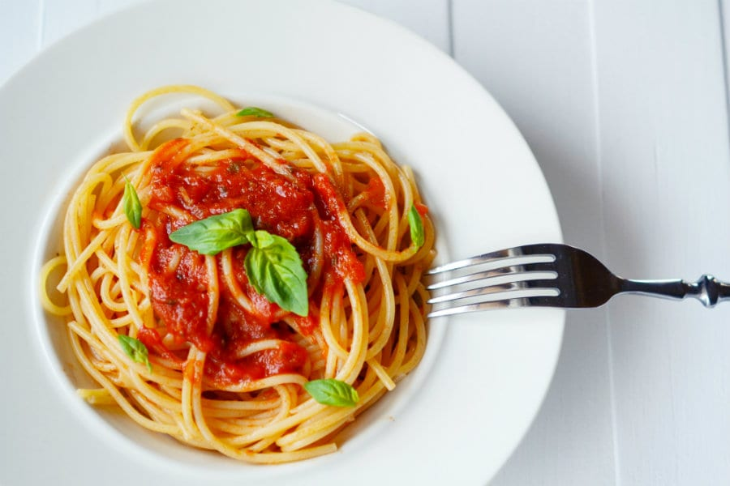

Spaghetti al pomodoro

Description
Un piatto simbolo della cucina italiana, con i tipici ingredienti del
Bel Paese: spaghetti al pomodoro e basilico.
Gli spaghetti al pomodoro
sono un'istituzione, una ricetta semplice ma tutt'altro che banale. Soggetta
ad infinite varianti per trovare l'equilibrio perfetto di sapori,
la giusta cremosità e dolcezza, partendo già dalla scelta del tipo di
pomodoro, da utilizzare per realizzare il sugo.
Ingredienti:
Dosi per 4 persone
- Spaghetti (320g)
- Olio extravergine d'oliva (30)
- Basilico
- Pomodori pelati (800g)
- Aglio (1 spicchio)
- Sale fino
Steps
- In una padella versate l'olio extravergine d’oliva insieme allo
spicchio d'aglio sbucciato e diviso a metà.
- Dopo 2 minuti di cottura a fiamma viva, unite i pomodori pelati
e aggiustate di sale.
- Coprite con un coperchio e fate cuocere per almeno 1 ora a fuoco
molto basso: il sugo dovrà sobbollire dolcemente.
- Mescolate di tanto in tanto. Trascorso il tempo indicato, eliminate
l’aglio 5 e passate i pomodori al passaverdure.
- Trasferite nuovamente in padella il sugo 7, accendete il fuoco molto
basso e aggiungete le foglie di basilico.
- Dopo qualche minuto potete spegnere la salsa e tenere in caldo. A
questo punto non vi resta che cuocere la pasta in abbondante acqua
bollente e salata.
- Scolate gli spaghetti al dente direttamente nel sugo 10 e mescolate
qualche istante a fiamma viva per amalgamare il tutto.
- guarnire con basilico fresco a piacimento